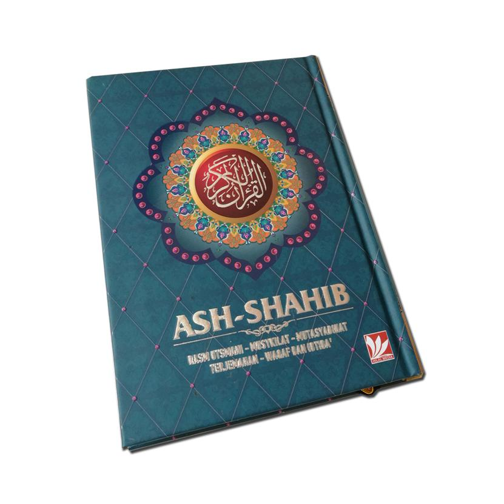
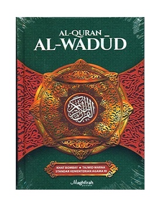

200.000
100.000
Deskripsi
Pada buku Sejarah Penulisan Mushaf Al-Qur’an Standar Indonesia yang ditulis oleh Zainal Arifin,dkk, dijelaskan 8 tanda.Kedelapan tanda itu adalah: 1) idgam; 2) iqlab, dengan tanda mim kecil; 3) Mad wajib; 4) Mad jaiz; 5) Saktah; 6) imalah; 7) isymam; dan 8) Tashil.
Informasi Tambahan
Beda antara HP dengan mushaf Al-Quran yang kita kenal sehari-hari dari segi pengaktifan. Kalau diaktifkan, maka barulah HP itu menampilkan tulisan ayat-ayat Al-Quran. Sebaliknya, kalau dimatikan tentu tulisannya tidak ada lagi.

